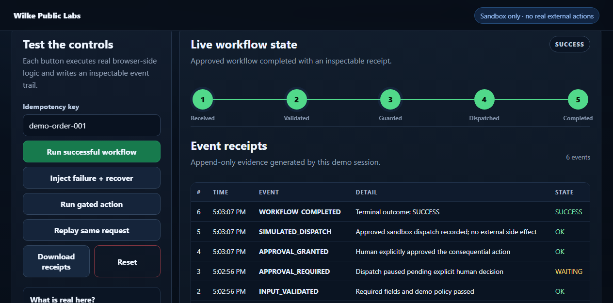
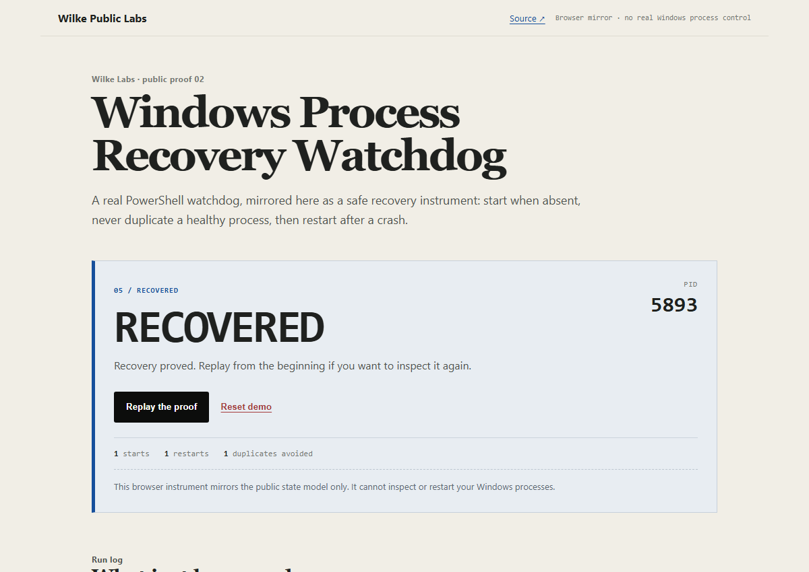

01
Automation Reliability Lab
Inject a failure, exercise bounded retry and fallback, stop a consequential action for human approval, replay a completed request, then inspect the event receipts.

PUBLIC, RUNNABLE PROOF
Each lab below is sandboxed, sanitized, source-backed, and test-backed. Open the live demo first; inspect the implementation and tests when you want the details.
Last verified locally and in browser: 2026-09-21 · CI workflow included in public repo
Inject a failure, exercise bounded retry and fallback, stop a consequential action for human approval, replay a completed request, then inspect the event receipts.

Start an absent process, prove a healthy process is not duplicated, simulate a crash, then recover it with a fresh PID. The public PowerShell watchdog and its Windows fixture test sit beside the browser mirror.

In progress: AI developer context/handoff and workflow reliability controls. They stay off this page until the public versions are runnable, sanitized, and independently reviewed.